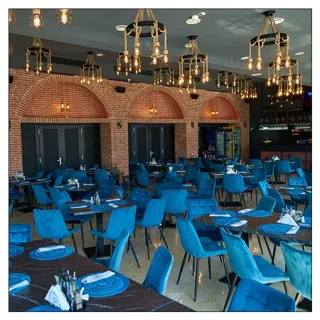
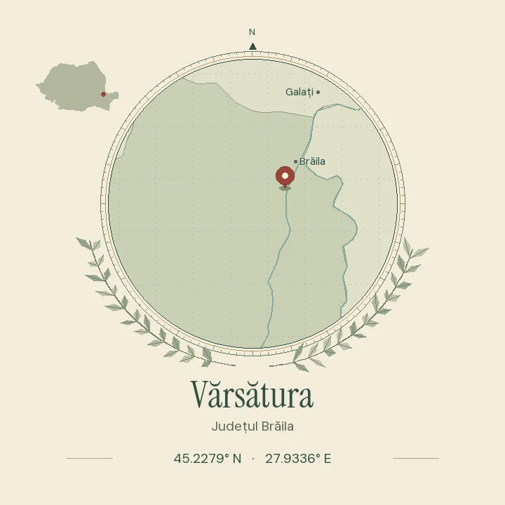
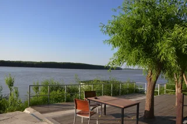
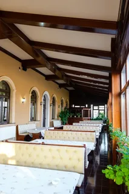
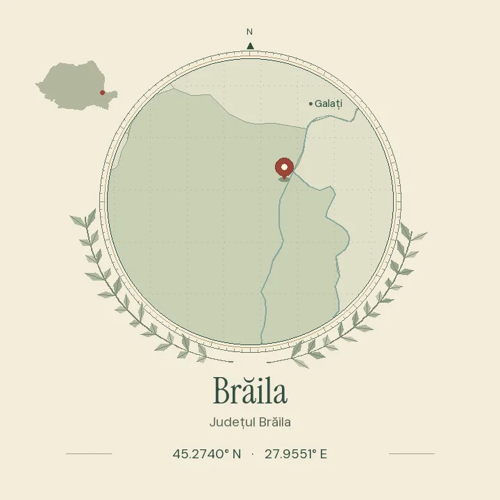
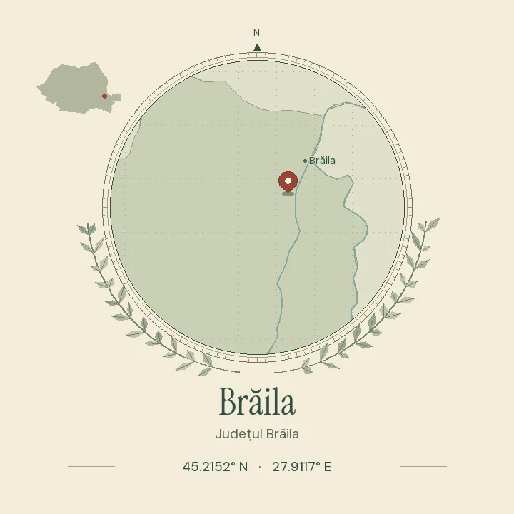
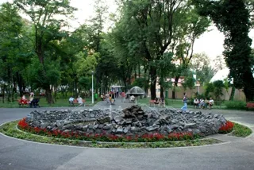
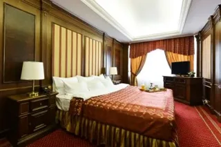

Locații de nuntă în județul Brăila
- locații în director
- 10
- cu cazare în registrul SITUR
- 5
- medie ponderată Google
- 4,3 / 5
- evaluări Google
- 5.952
Cum alegi unde mergi la vizionare
Brăila și Lacu Sărat sunt puncte de pornire diferite pentru aceeași listă de vizionări. Pentru o candidată din stațiune, întrebați care intrare deservește evenimentul și dacă oaspeții cazați folosesc în același timp spațiul vizat pentru fotografii sau pentru întâmpinarea invitaților.
La Grand Hotel Orient, mărturia unui oaspete indică posibilitatea de a parca în curte. Dacă o proprietate urbană vă atrage pentru fotografii sau pentru primirea invitaților, verificați la ce ore intră acolo mașinile. Pentru alternativa din Lacu Sărat, păstrați pe aceeași fișă accesul celor cazați și accesul furnizorului de flori. Veți afla ce trasee trebuie separate în timpul ceremoniei.
Două adrese pentru o zi de vizionări
Pe hartă, între aceste două proprietăți sunt 4,1 km în linie dreaptă. Deschide indicațiile de drum din fișe ca să vezi traseul pe șosea înainte de a stabili a doua întâlnire.
- Alma Health & Spa Retreat · Aleea Centrală 5, 817026 Lacu Sărat
- Nemo - Braila · Malul Dunarii nr 5, 810435 Brăila
Explorează după localitate
Toate locațiile din județul Brăila
Ordinea ține cont de nota Google și de numărul evaluărilor. Cum calculăm ordinea
Fotografie a locației · Sursa fotografiei Lacu Sărat · Hotel
Alma Health & Spa Retreat
Hotel cu spa, piscină interioară și bistro pe malul lacului la Lacu Sărat: ce laudă și ce reclamă oaspeții, plus ce să întrebi pentru un eveniment.
Aleea Centrală 5, 817026 Lacu Sărat+40 339 800 801
Fotografie a locației · Sursa fotografiei Brăila · Hotel
Hotel Adriano
Hotel în Brăila cu restaurant, terasă și piscină, camere mari lăudate și nunți pomenite pe site. Ce să întrebi despre evenimente simultane.
Strada Transilvaniei 7, 810058 Brăila+40 746 059 361
Hartă ilustrată Vărsătura · Hotel
Pensiunea Vis Braila
Pensiunea Vis Braila. Dacă și invitații voștri călătoresc cu copii, întrebați gazda cum ar așeza familiile în camere față de locul unei mese comune.
Strada Principală 28, 817027 Vărsătura+40 752 361 310
Fotografie a locației · Sursa fotografiei Brăila · Hotel
Nemo - Braila
Nemo - Braila, Brăila. Când o vedeți ocupată, urmăriți pe unde se intră și cum se poate circula în jurul meselor.
Malul Dunarii nr 5, 810435 Brăila+40 755 050 565Fotografie a locației · Sursa fotografiei Brăila · Hotel
Rebis Hotel Braila
Rebis Hotel Braila, Brăila. Un client s-a oprit la terasa hotelului Rebis pentru mici și bere și spune că a ascultat muzică în timpul mesei.
Aleea Centrala nr 13, Statiunea Lacu Sarat, 817026 Brăila+40 734 909 953
Fotografie a locației · Sursa fotografiei Brăila · Hotel
Grand Hotel Orient
Hotel în Brăila cu terasă spre Dunăre și restaurant de 300 de locuri. Verifică dacă restaurantul funcționează și cum e izolarea camerelor.
Strada Rubinelor 1, Brăila+40 239 620 063
Hartă ilustrată Brăila · Pizzerie
Pizza Adriano
La Pizza Adriano din Brăila, un client descrie o masă pe terasa de lângă piscină. Află ce să întrebi despre rezervarea meselor pentru un grup.
Strada Transilvaniei 32, 810249 Brăila+40 239 636 096
Hartă ilustrată Brăila · Vilă
Pensiunea Sabrina Lacu Sărat Brăila
Pensiunea Sabrina Lacu Sărat Brăila. Un oaspete al pensiunii Sabrina își amintește mai ales de pădurile și parcurile din Lacu Sărat și de liniștea apei.
Aleea Centrală, 880011 Brăila
Fotografie a locației · Sursa fotografiei Brăila · Hotel
Regal
Un oaspete al hotelului Regal din Brăila își amintește de tavanul înalt al camerei și de senzația de frig în timpul șederii.
Strada Mihail Sebastian 21, 810083 Brăila+40 239 619 650
Fotografie a locației · Sursa fotografiei Brăila · Hotel
Hotel Belvedere Brăila
Hotel în centrul Brăilei cu saloane de 120, 25 și 10 locuri, aproape de faleza Dunării. Recenzii împărțite; ce să puneți în contract.
Piața Independenței 1, Brăila+40 239 619 929
Întrebări despre locațiile din județul Brăila
Unde pot dormi invitații în județul Brăila?
În registrul de cazare SITUR găsim Hotel Adriano (400 de locuri de cazare), Nemo - Braila (22 de locuri de cazare), Grand Hotel Orient (88 de locuri de cazare). Verifică ce camere sunt libere pentru noaptea evenimentului.
Ce proprietăți din județul Brăila au grădină sau terasă?
Alma Health & Spa Retreat (terasă); Hotel Adriano (terasă); Nemo - Braila (terasă). Cere administratorului condițiile de folosire pentru o petrecere privată.
Care locație din județul Brăila are cele mai multe evaluări Google?
Pizza Adriano are 1.871 de evaluări în profilul Google folosit la documentare. Evaluările acoperă și alte experiențe la proprietate, inclusiv vizitele fără eveniment.
Unde apare o intrare accesibilă în județul Brăila?
Profilurile Google indică o intrare accesibilă la Pizza Adriano, Pensiunea Sabrina Lacu Sărat Brăila. Pentru o cununie în exterior, cere detalii despre traseul dintre intrare și zona cu scaune.